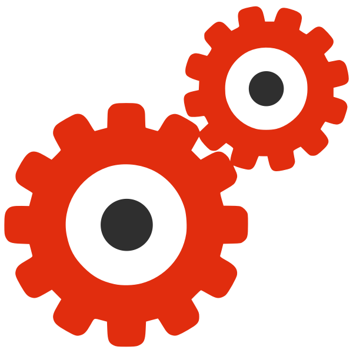
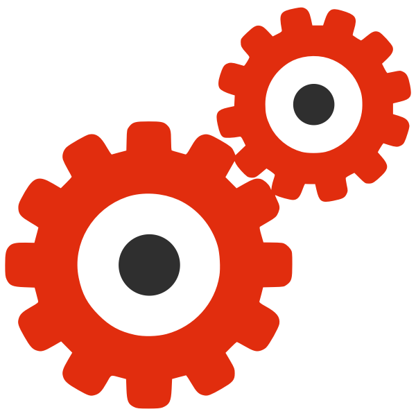
Sri Sairam Engineering College
SCHOOL TOWARDS TECHNOLOGY 6.0
Science to Technology Initiative
THEME: DRIVING GLOBAL CHANGE THROUGH EXPLORATION, INNOVATION, AND VOLUNTEER ACTION
Empowering school students to turn scientific curiosity into real-world technological solutions that impact society.
Participate & Give Feedback
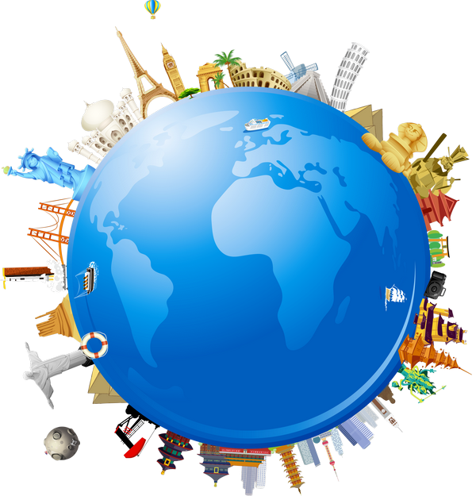
 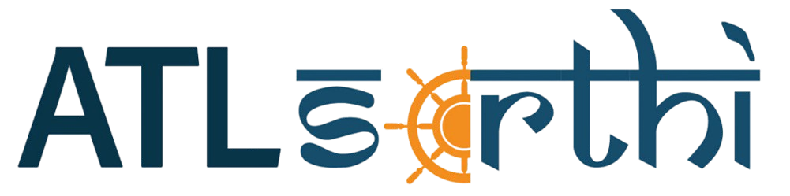
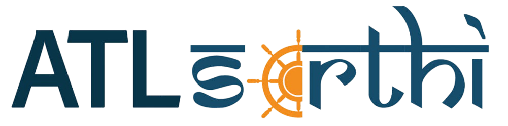
 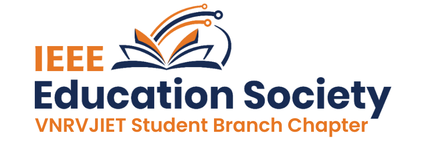
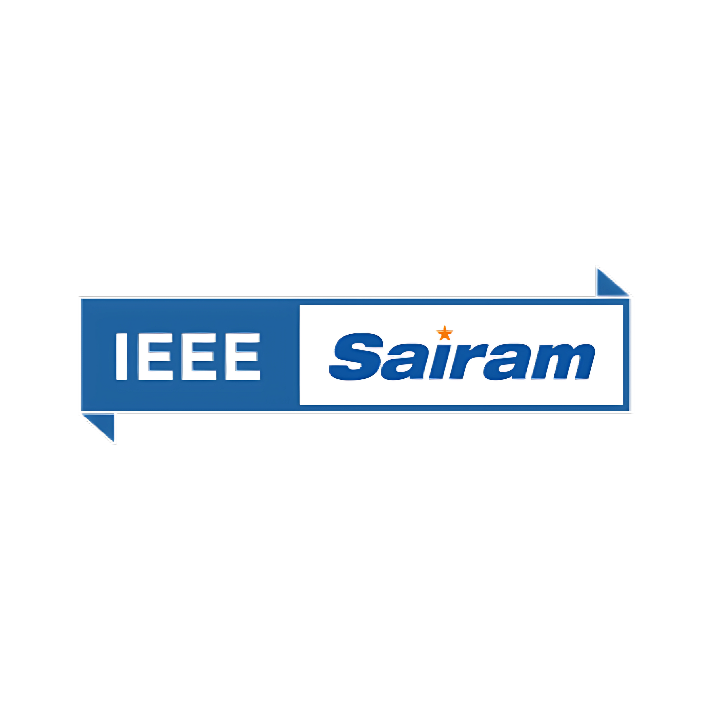
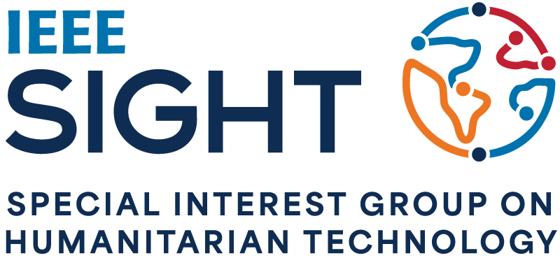
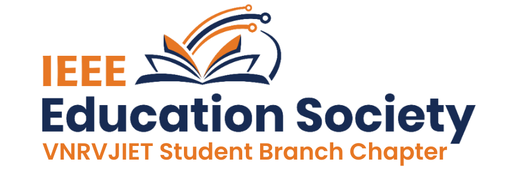
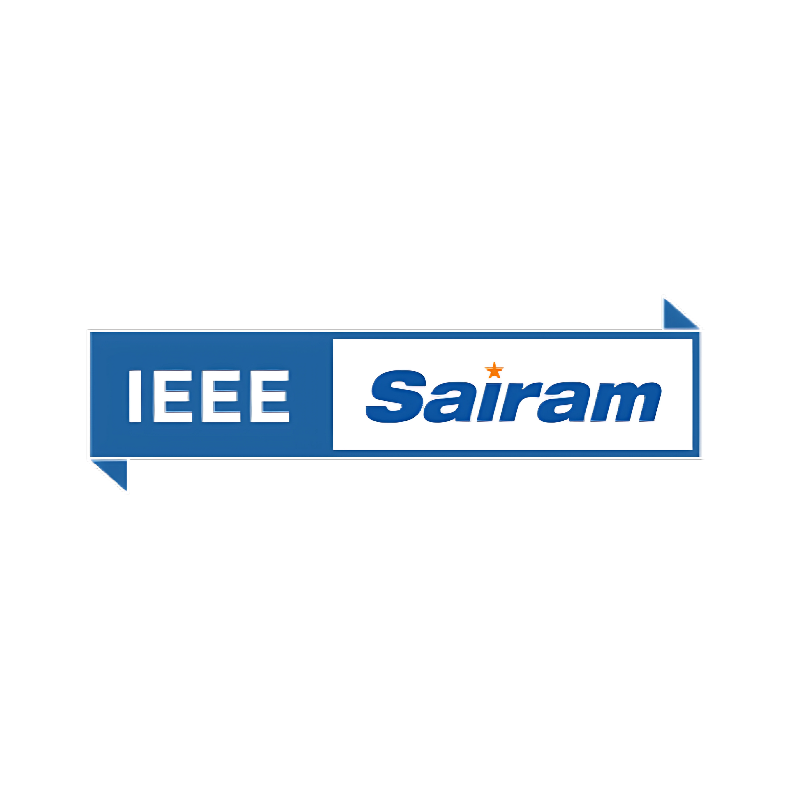
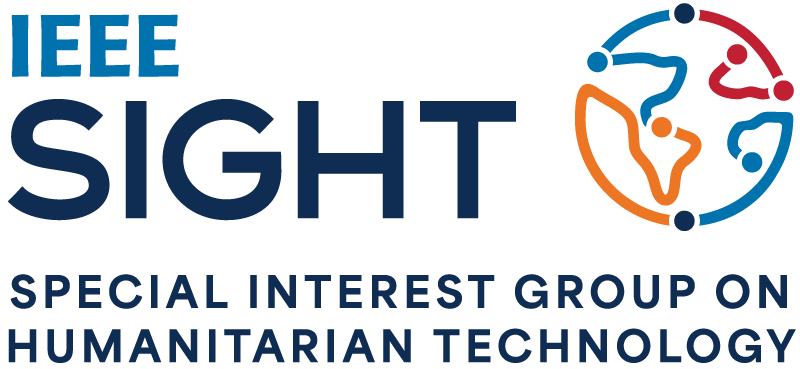
 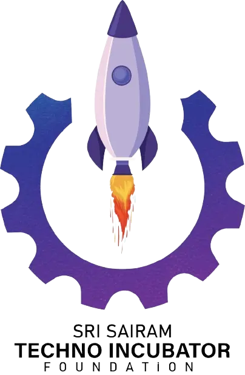
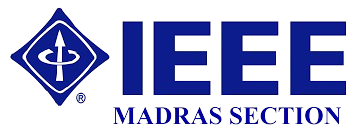
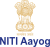
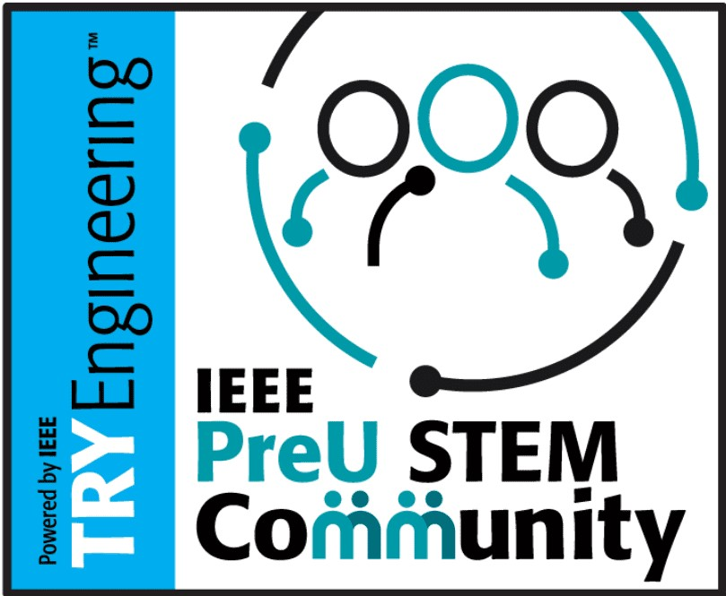
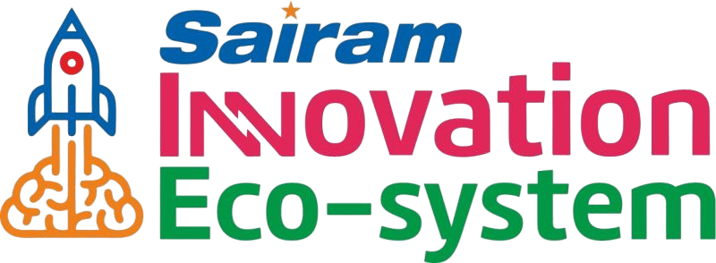
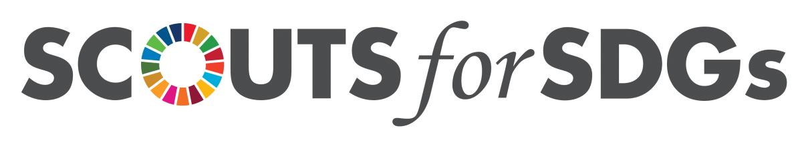
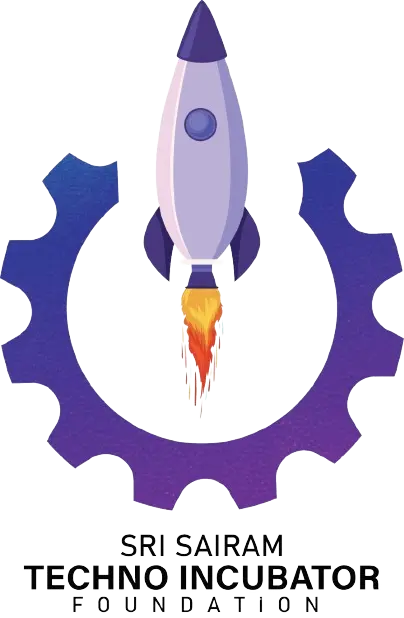
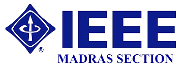
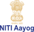
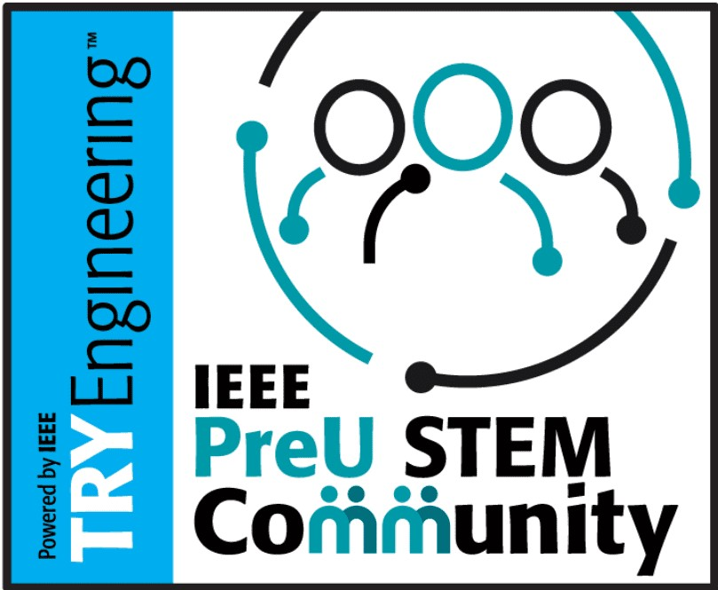
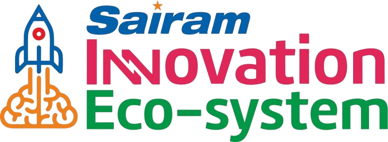
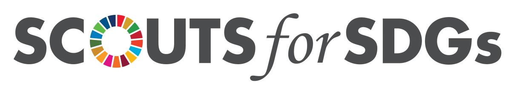